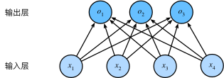

softmax回归
softmax回归一般用于将给定的几种标签类别进行分类，输出每种标签类别的概率。
分类问题
如果给定的类别的标签不是一个数学表达式，可以用 独热编码（one-hot encoding） 来处理，例如对于标签 $\lbrace 猫, 狗, 鸡\rbrace$，假设每次输入是一个 $2\times 2$ 的灰度图像。 我们可以用一个标量表示每个像素值，每个图像对应四个特征 $x_1, x_2, x_3, x_4$ 。 此外，假设每个图像属于类别“猫”，“鸡”和“狗”中的一个。独热编码是一个向量，它的分量和类别一样多。类别对应的分量设置为1，其他所有分量设置为0。 在我们的例子中，标签 $y$ 将是一个三维向量， 其中 $(1,0,0)$ 对应于“猫”、 $(0,1,0)$ 对应于“鸡”、 $(0,0,1)$ 对应于“狗”：
$$y\in \lbrace (1,0,0), (0,1,0), (0,0,1)\rbrace.$$
网络架构
为了估计所有可能类别的条件概率，我们需要一个有多个输出的模型，每个类别对应一个输出。为了解决线性模型的分类问题，我们需要和输出一样多的仿射函数。每个输出对应于它自己的仿射函数。 由于我们有4个特征和3个可能的输出类别， 我们将需要12个标量来表示权重（带下标的 $w$ ）， 3个标量来表示偏置（带下标的 $b$）。 下面我们为每个输入计算三个未规范化的预测： $o_1$、$o_2$ 和 $o_3$。
$$
\begin{aligned}
o_1 &= x_1w_{11} + x_2w_{12} + x_3w_{13} + x_4w_{14} + b_1, \\
o_2 &= x_1w_{21} + x_2w_{22} + x_3w_{23} + x_4w_{24} + b_2, \\
o_3 &= x_1w_{31} + x_2w_{32} + x_3w_{33} + x_4w_{34} + b_3.
\end{aligned}
$$
这样 $o_i$ 就是每个标签类别的未规范预测，用矢量化的方式来表达就是：
$$\bf{O = XW + b}.$$
其中，$\mathbf{X}\in \mathbb R^{n\times d}$，为 $n\times d$ 大小的矩阵，表示 $n$ 个样本，$d$ 维特征；权重为 $\mathbf{W}\in \mathbb R^{d\times q}$， 偏置为 $\mathbf{b}\in R^{1\times q}$。最终计算的结果 $\mathbf{O}$ 就是一个 $n\times q$ 的矩阵。
由于计算每个输出 $o_1$、$o_2$ 和 $o_3$ 取决于 所有输入 $x_1, x_2, x_3$ 和 $x_4$，所以softmax回归的输出层也是全连接层。

softmax运算
现在我们将优化参数以最大化观测数据的概率。 为了得到预测结果，我们将设置一个阈值，如选择具有最大概率的标签。
我们希望模型的输出 $\hat{y_j}$ 可以视为属于类 $j$ 的概率， 然后选择具有最大输出值的类别 $\text{argmax}_j\ y_j$ 作为我们的预测。 例如，如果 $\hat{y_1}$、$\hat{y_2}$ 和 $\hat{y_3}$ 分别为0.1、0.8和0.1， 那么我们预测的类别是2，在我们的例子中代表“鸡”。
未规范化的模型输出 $\mathbf{O} = (o_1, o_2, \ldots, o_n)$ 是不能作为一般意义上的预测的，因为我们没有限制这些输出数字的总和为1，并且根据输入的不同，他们可以为负值，这违背了概率基本公理。如果要将输出视为概率，我们需要对其做特殊处理，我们必须保证在任何数据上的输出都是非负的且总和为1。 此外，我们需要一个训练目标，来鼓励模型精准地估计概率。
softmax函数正好能起到这样一个作用，它能将未规范化的预测变换为非负并且总和为1，同时要求模型保持可导。如下式：
$$
\begin{aligned}
\hat{\mathbf{y}} &= \text{softmax} (\mathbf{o}), \\
\hat{\mathbf{Y}} &= \text{softmax} (\mathbf{O}).
\end{aligned}
$$
其中，$\hat{\mathbf{y}}$ 的每个分量 $\hat{y_j} = \dfrac{\exp (o_j)}{\sum_k \exp (o_k)}$，由于对每个量都求了幂，所以对所有的 $\hat{y_j}$ 都满足 $0\leq \hat{y_j}\leq 1$。因此 $\hat{\mathbf{y}}$ 就可以视为一个概率分布。
虽然softmax是一个非线性函数，但softmax回归的输出由输入特征 $\mathbf{X}$ 的仿射变换决定，因此softmax回归仍是一个线性模型。
损失函数
softmax回归中损失函数采用最大似然估计。
对数似然
softmax函数给出了一个向量 $\hat{\mathbf{y}}$ ， 我们可以将其视为“对给定任意输入 $\mathbf{x}$ 的每个类的条件概率”。 例如， $\hat{y_1} = P(y = \text{猫}\mid \mathbf{x})$。这里标签 $y = \text{猫}\mid \mathbf{x}$ 要视为一个事件，这个事件的概率为 $\hat{y_1}$，转化为数学表达式就是 $\hat{y}_1 = P(y = (1, 0, 0)\mid \mathbf{x})$。
稍微解释一下这里的含义，比如一个 $2\times 2$ 的图象，用一个特征向量 $x_1, x_2, x_3, x_4$ 来表示，即输入一个特征 $\mathbf{x} = (x_1, x_2, x_3, x_4)$，用权重 $\mathbf{w} = (w_1, w_2, w_3, w_4)$ 和偏置 $\mathbf{b} = (b_1, b_2, b_3, b_4)$ 对其作仿射变换，会得到一个未规范化输出 $\mathbf{o} = (o_1, o_2, o_3, o_4)$，在经过上述的softmax运算，即可得到符合概率分布的 $\mathbf{\hat{y}}$ 了，我们假设这里： $$\mathbf{\hat{y}} = (0.63, 0.17, 0.20).$$ 那么根据之前的设定，我们的预测结果就是“猫”，并且在一个样本中，用独热向量表示：$$\mathbf{y} = (1, 0, 0).$$
假设一个数据集 $\lbrace \mathbf{X}, \mathbf{Y}\rbrace$ 有 $n$ 个这样的样本，其中索引为 $i$ 的样本由特征向量 $\mathbf{x}^{(i)}$ 和独热向量 $\mathbf{y}^{(i)}$ 组成，我们可以根据这样一个总体的样本来对实际分布做估计：
$$P(\mathbf{Y}\mid \mathbf{X}) = \prod_{i=1}^n P(\mathbf{y}^{(i)}\mid \mathbf{x}^{(i)}).$$
根据最大似然估计，我们最大化 $P(\mathbf{Y}\mid \mathbf{X})$，相当于最小化负对数似然：
$$-\ln P(\mathbf{Y}\mid \mathbf{X}) = \sum_{i=1}^n - \ln P(\mathbf{y}^{(i)}\mid \mathbf{x}^{(i)}),$$
对于每个样本 $\lbrace \mathbf{y}\mid \mathbf{x}\rbrace$ 来说，$\mathbf{y}$ 的每个分量 $y_i$ 就是代表在输入特征为 $\mathbf{x}$ 的情况下，第 $i$ 个标签的预测值，取值为0和1（独热向量相当于对概率分布做了调整，使最大的那个视为1，其余视为0），因此，我们可以借助交叉熵损失 $H(\text{p}, \text{q}) = \sum\limits_i -p_i\ln (q_i)$ 来衡量标签 $\mathbf{y}$ 和模型预测 $\hat{\mathbf{y}}$ 之间概率的区别：
$$ \sum_{i=1}^n l(\mathbf{y}^{(i)}, \hat{\mathbf{y}}^{(i)}),$$
其中，对于任何标签 $\mathbf{y}$ 和模型预测 $\hat{\mathbf{y}}$，损失函数为：
$$ l(\mathbf{y}, \hat{\mathbf{y}}) = -\sum_{j=1}^q y_j \ln \hat{y}_j.$$
由于标签 $\mathbf{y}$ 是独热向量，只有其中一个分量为1，其余均为0，所以对一个样本来说，它的损失函数为：
$$ l(\mathbf{y}, \hat{\mathbf{y}}) = -\sum_{j=1}^q y_j \ln \hat{y}_j = -\ln \hat{y}_y.$$
$\hat{y}_y$ 表示模型预测概率最大的那个类别 $y$ 对应的模型预测概率。
由于我们需要对 $P(\mathbf{X}\mid \mathbf{Y})$ 进行最大化，将上式子代入最小化负对数似然，即可得到：
$$ \begin{aligned} -\ln P(\mathbf{Y}\mid \mathbf{X}) &= \sum_{i=1}^n - \ln P(\mathbf{y}^{(i)}\mid \mathbf{x}^{(i)}) \\ &= \sum_{i=1}^n - \ln \hat{y}_i \\ &= \sum_{i=1}^n l(\mathbf{y}^{(i)}, \hat{\mathbf{y}}^{(i)}). \end{aligned} $$
softmax及其导数
由于softmax和相关的损失函数很常见，因此有必要详细分析其计算方式。根据交叉熵损失函数和softmax定义，可以得到：
$$ \begin{aligned} l(\mathbf{y}, \hat{\mathbf{y}}) = -\sum_{j=1}^q y_j \ln \dfrac{\exp(o_j)}{\sum\limits_{k=1}^q \exp(o_k)} &= \sum_{j=1}^q y_j \ln \dfrac{\sum\limits_{k=1}^q \exp(o_k)}{\exp(o_j)}. \end{aligned} $$
我们来详细推导一下这个公式，继上式：
$$ \begin{aligned} \sum_{j=1}^q y_j \ln \dfrac{\sum\limits_{k=1}^q \exp(o_k)}{\exp(o_j)} &= \sum_{j=1}^q y_j \ln \dfrac{\exp(o_1) + \exp(o_2) + \cdots + \exp(o_k)}{\exp(o_j)} \\ &= \sum_{j=1}^q y_j \left( \ln \sum_{k=1}^q \exp(o_k) - \ln \exp(o_j) \right) \\ &= \sum_{j=1}^q y_j \ln \sum_{k=1}^q \exp(o_k) - \sum_{j=1}^q y_jo_j. \end{aligned} $$
由于独热向量 $\mathbf{y}$ 中只有一个类别 $y_y$ 取值为1，其他均为0，因此：
$$ l(\mathbf{y}, \hat{\mathbf{y}}) = \ln \sum_{k=1}^q \exp(o_k) - \sum_{j=1}^q y_jo_j. $$
注意：这里化不化简第二项都是可以的，化简过后，实际上是 $o_y$，即实际标签的不规范预测。
在后面对任意 $o_j$ 求导时，如果 $j$ 恰好是实际标签，那么 $y_j = 1$，否则 $y_j = 0$。
考虑该交叉熵损失对任意未规范化预测 $o_j$ 的偏导数：
$$ \begin{aligned} \dfrac{\partial l(\mathbf{y}, \hat{\mathbf{y}})}{\partial_{o_j}} &= \dfrac{\partial \left( \ln \sum\limits_{k=1}^q \exp(o_k) - \sum\limits_{j=1}^q y_jo_j \right)}{\partial_{o_j}} \\ &= \dfrac{\exp(o_j)}{\sum\limits_{k=1}^q \exp(o_k)} - y_j \\ &= \text{softmax} (\mathbf{o})_j - y_j. \end{aligned} $$
模型预测和评估
在训练softmax回归模型后，给出任何样本特征，我们可以预测每个输出类别的概率。 通常我们使用预测概率最高的类别作为输出类别。 如果预测与实际类别（标签）一致，则预测是正确的。 在以后的实验中，我们将使用精度来评估模型的性能。 精度等于正确预测数与预测总数之间的比率。